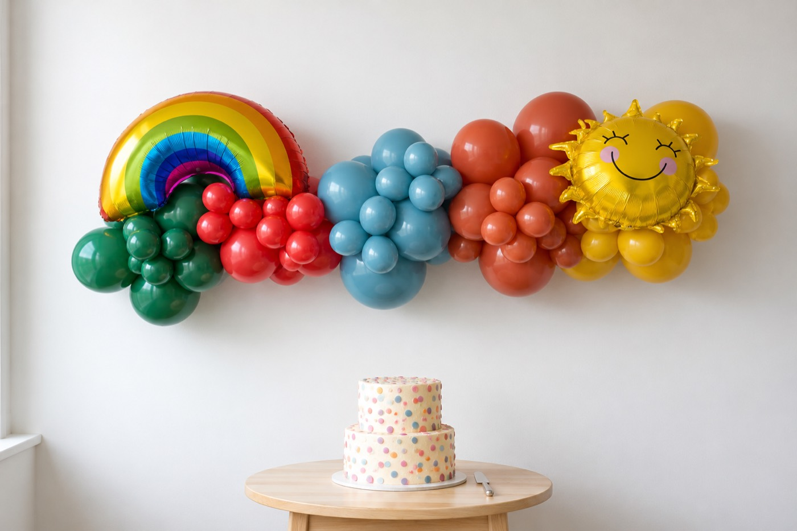

Balloon Garland Hire in Auckland: Grab & Go vs Custom
Two easy ways to get the look — and how to pick yours

Looking for balloon garland hire in Auckland? You're in the right place. A balloon garland is the fastest way to turn an ordinary room into a celebration. Whether it's a first birthday, a baby shower, or a big milestone, it's the piece that makes guests go "wow" as they walk in. The good news is there are two easy ways to get one. This guide walks you through both, so you can pick the right fit for your party and your budget.
We're Hooray HQ. We're based in Whangaparaoa and we style parties right across Auckland. Here's how balloon garland hire Auckland works with us, and how to choose between our two services.
What is a balloon garland, anyway?
A balloon garland is a flowing cluster of balloons in your chosen colours. It's usually arranged along a wall, an arch, or a dessert table. It's the backdrop everyone photographs, and the centrepiece guests gather around. Modern garlands mix different balloon sizes with a few statement touches, like foil numbers or themed shapes. That's what makes them look styled rather than store-bought.
Two ways to hire a balloon garland in Auckland
Not every party needs the same thing. Some people want to grab a ready-made garland and set it up themselves. Others want the whole look designed and installed for them. That's exactly why we offer two services.
Option 1: Grab & Go balloon garlands
Our Grab & Go range is the quick, budget-friendly way to get a beautiful garland. You pick your style and length online. You choose your colours from our palettes, or build your own. You can add a foil number or letter, too. Then you collect your ready-made garland and pop it up at home.
It's ideal if you:
- Want a gorgeous garland without the custom price tag
- Are happy to hang it yourself (it's easier than it looks, we promise)
- Have a clear colour scheme in mind
- Are working to a tighter timeline
Grab & Go garlands come in a range of lengths. There's a size for everything, from a cake table to a feature wall. Pickup is available Monday, Thursday, Friday, and Saturday, so there's plenty of flexibility around your party date.
Option 2: Custom & Themed installs
Want it done properly, with zero stress on the day? Our Custom & Themed service brings your whole vision to life. We design the garland to your theme. We add the special details. We deliver it, and we install it for you. You just show up and enjoy a room that already looks incredible.
This is the right choice if you:
- Want a statement piece for a big event or milestone
- Have a specific theme, colour story, or Pinterest board in mind
- Need it set up at a venue or styled around a backdrop
- Would rather hand the whole thing over to us
Custom installs suit weddings, large birthdays, corporate events, and any celebration that should feel truly special. Every custom order is delivered and installed across Auckland.
Grab & Go or Custom: which is right for you?
Here's a quick way to decide. If your main goals are value and speed, and you don't mind a little DIY, Grab & Go is your friend. If you want a designer look, a specific theme, and someone else to handle setup, go Custom. Still unsure? Send us a message with a few details about your party, and we'll point you in the right direction.
Colours, sizes, and getting the look right
The secret to a garland that looks professional is a considered colour palette. Two or three colours that work together will always read as "styled". With Grab & Go you can choose from our ready-made palettes or build your own. With Custom, we'll help you nail a palette that matches your theme exactly.
A few styling tips that go a long way:
- Keep your palette tight: two or three main colours plus a metallic
- Add one statement piece, like a foil number for a birthday
- Position the garland where guests will see it first, or behind the cake
- Match your tableware to the same colours for a pulled-together look
For more help pulling the whole day together, our guide to planning the perfect kids' party is a good next read.
Balloon garland hire across Auckland
From Whangaparaoa down through the North Shore and across greater Auckland, we make balloon garland hire the easy part of your party planning. Grab & Go gives you a ready-made garland to collect and pop up yourself. Custom & Themed gives you a fully designed and installed look, with nothing left to do but celebrate.
Ready to get started? Browse our Grab & Go balloon garlands to pick your colours and length, or request a custom quote and we'll bring your theme to life. Let's make your day one worth HOORAY-ing about.